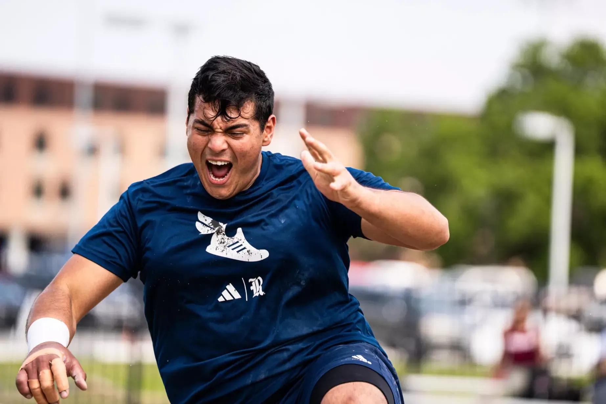
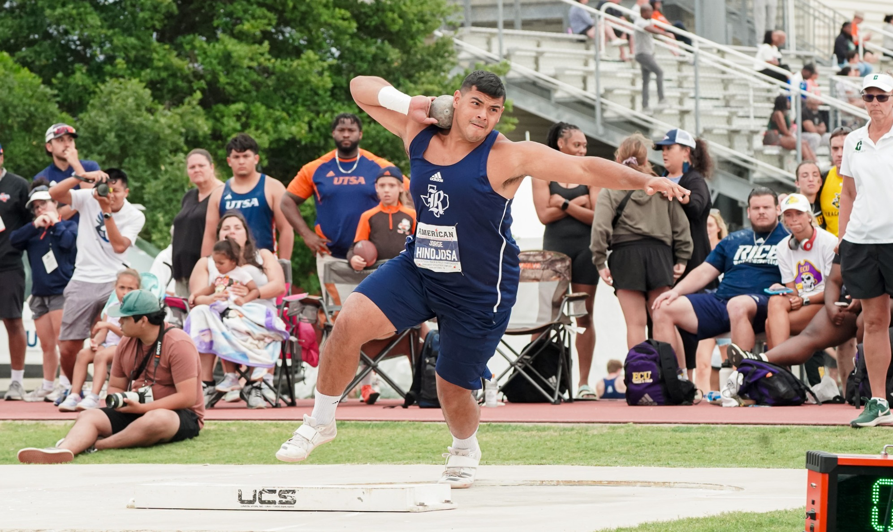

Education
 Rice University
Rice University
Bachelor of Science in Mechanical Engineering, with a specialization in mechanics and dynamics. Graduated May 2025.
Rice Track & Field
Competed for five seasons in NCAA Division I track and field, specializing in the shot put and discus.
Shot Put & DiscusRice Men’s Track & Field
24 PointsConference championship team points
All-Academic2024-25 American Conference
1 / 4
Competition and preparation 
NCAA Division I athletics Throws program 
Five seasons at Rice

